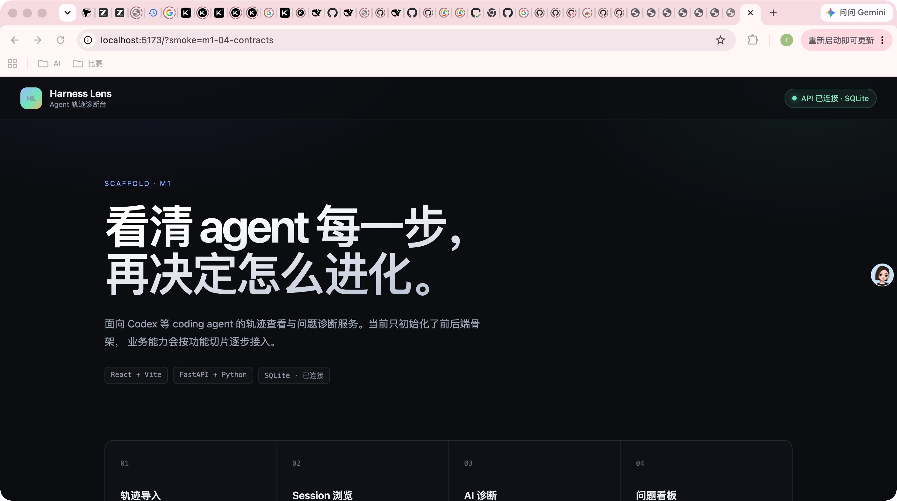
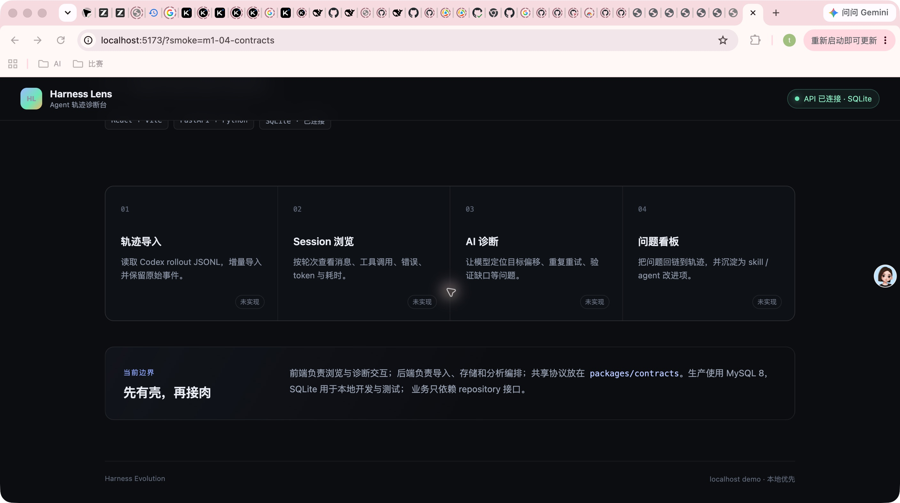
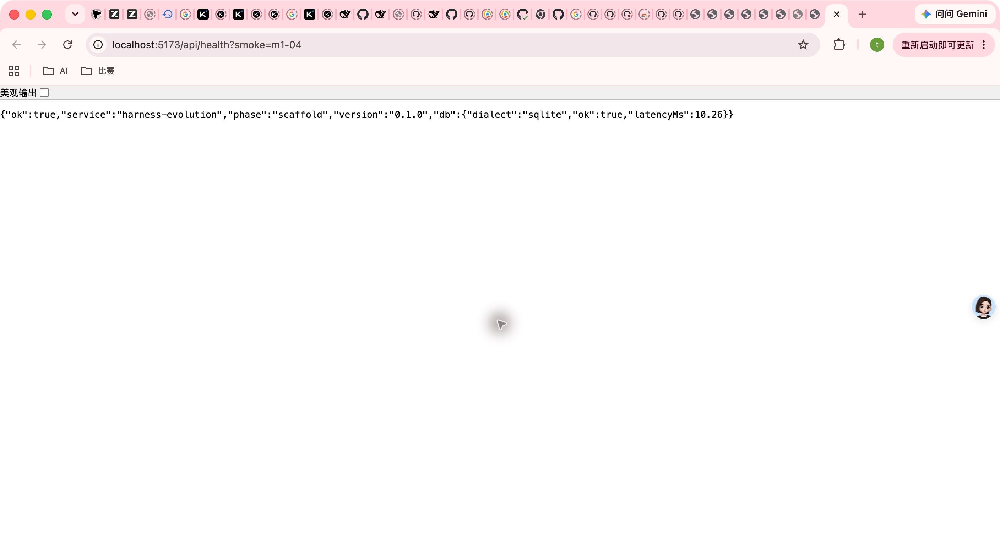
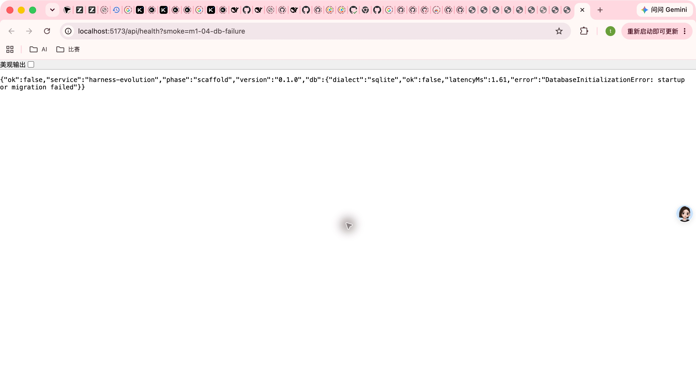
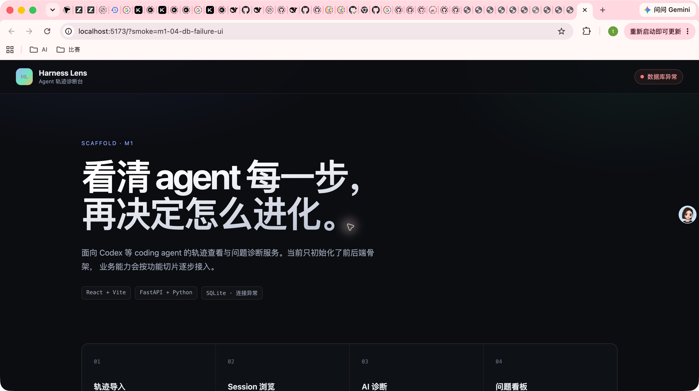

- Application
- Harness Evolution web + FastAPI
- Branch
- codex/m1-04-contract-pipeline
- Commit
- 3c08a3b2ba2f0ff0169935488e05650a9c8b75b0
- Services
- FastAPI 8787 + Vite 5173 on host loopback
- Browser
- Google Chrome at desktop viewport
- Failure injection
- Controlled sqlite URL with an unavailable parent directory
Computer Use · Integration Smoke
M1-04 OpenAPI 契约链路集成 Smoke
真实 Chrome、Vite 代理与 FastAPI 联调通过：canonical OpenAPI 在污染环境下保持稳定，前端可连接并按同一契约展示 200/503，健康响应字段与生成 fixture 形状一致。
8 / 8Scenarios passed
0Defects
5Screenshots
3 / 3Cross-stack tests
Environment and Artifact
2026-10-25 · macOS · Google Chrome · desktop viewportScenario Matrix
8 pass| # | 场景 | 结果 | 断言与证据 | 截图/命令 |
|---|---|---|---|---|
| 01 | 启动真实前后端 | PASS | Vite 监听 localhost:5173，FastAPI 监听 8787；启动日志无异常。 | host lsof dev session log |
| 02 | 首页消费 health 契约 | PASS | 顶栏显示“API 已连接 · SQLite”，hero 显示 SQLite · 已连接。 | 01-home-connected.jpeg accessibility tree |
| 03 | 契约边界与模块布局 | PASS | 四个模块、packages/contracts 边界说明和 footer 完整可见，无横向溢出或遮挡。 | 02-modules-contracts.jpeg |
| 04 | 真实 200 health 契约 | PASS | 浏览器收到 ok/service/phase/version/db 完整结构；latencyMs 使用 camelCase，省略 null error。 | 03-health-success.jpeg host curl |
| 05 | canonical 导出不受环境污染 | PASS | 设置 HE_VERSION/HE_PHASE/HE_DOCS_ENABLED 后 contract:check 仍与提交的 canonical OpenAPI 逐字一致。 | HE_VERSION=contract-probe HE_PHASE=live HE_DOCS_ENABLED=true pnpm contract:check |
| 06 | 四件契约产物防漂移 | PASS | contract:check 在临时目录重算 OpenAPI、API 类型、health JSON 和 typed fixture 并逐字比较；门禁自测试 21/21。 | pnpm contract:check pnpm test:gates |
| 07 | 受控数据库故障 503 | PASS | Vite 代理返回 ok=false、db.ok=false 与固定 DatabaseInitializationError 摘要；未泄露受控 URL、私有路径或连接细节。 | 04-health-db-failure.jpeg dev session log |
| 08 | 503 前端状态 | PASS | 顶栏变为“数据库异常”，hero 变为 SQLite · 连接异常；页面继续渲染契约边界与模块。 | 05-db-failure-ui.jpeg accessibility tree |
Issues and Observations
No defects foundNo defects were found.
Evidence
5 screenshots




Automated Coverage Assessment
4 areas reviewed| 范围 | 实测覆盖率 | 结果 | 备注 |
|---|---|---|---|
Conclusion
Ready to mergem1-04 的 canonical 契约链路、真实响应 fixture 和 503 展示在真实浏览器中均符合设计。
- 未发现需要提交新检视意见的产品问题。
- 污染环境不再导致 contract 输出漂移。
- 故障响应保持公开脱敏，双端覆盖率均高于 80%。
Evidence generated from Computer Use screenshots; HTML is rendered from report-data.json.